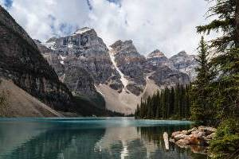
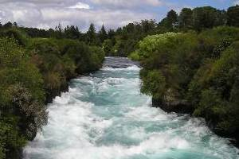

Whitewater Rafting Adventures
Plan Your Adventure
Scenic Trips

Day Trip
A scenic day trip is the perfect adventure for anyone who is new to rafting, looking for some beautiful nature photos, or a fun day activity for the family. Departing from our very own dock on the Snake River, you'll enjoy a calm, trip down the river. Some of the highlights include the Whisper Falls, Layered Cake Wall, and Blue Lagoon. With plenty of time for photos, and lots of local info from our guides, this trip is crowd pleaser. Day trips depart at 10:00 AM and return at 3:00 PM. Lunch and snacks are provided.
- Ages 10 to 17 - $70
- Ages 18+ - $90
Overnight Trip
Our scenic overnight trips are the perfect union of a scenic river experience and good old family camping trip. Enjoy the day on the river and catch all the highlights of our regular scenic day trip. Then your pick of campsite from Hardy's Bend, Cave Canyon, or The View! Our secondary team will meet you there with food on the fire, tents and sleeping bags ready to go. Wake up to fresh mountain air and enjoy a warm breakfast followed by the last leg of the rafting trip to see the Ribbon Winder. Overnight Trips depart on Fridays at 10:00 AM and return on Saturday at 11:00 AM. Lunch, dinner, breakfast, and snacks are provided.
- Ages 10 to 17 - $100
- Ages 18+ - $120
Whitewater Trips

Day Trip
A day trip is perfect for whitewater beginners. Prepare to move fast and get wet. This day trip is nicely spaced with calms between the rapids for adjustments and instructions from the guide. Highlights of this trip include the Ribbon Winder, Lucky Duck, and Widow Maker. It's equal parts fun, excitement, and splashes! A short bus trip to the take off point and a bus trip back to base are part of the trip. Day trips depart at 10:00 AM and return at 4:00 PM. Lunch and snacks provided.
- Ages 14 to 17 - $125
- Ages 18+ - $150
Overnight Trip
What's better than one day of whitewater mania? Two days!! With our completely planned-for-you overnight trips, all you need to worry about it what you're going to wear. It better be water proof, because you will get drenched! Highlights of this trip include Whats That Way, Bernadine's Blister, Gut Check, Wipeout, The Big One, and many many more. Camp over night at Gulver's Wake and get up and go again in the morning! Overnight trips depart on Fridays at 10:00 AM and return on Saturdays at 2:00 PM. Two lunches, dinner, breakfast, and snacks are provided.
- Ages 14 to 17 - $300
- Ages 18+ - $350